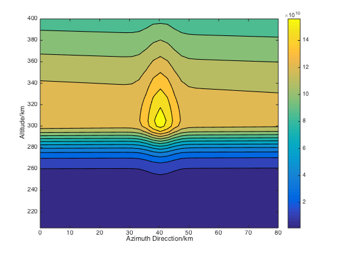

Contents
set up initial parameter
clc
clear all
close all
L=2080;
I=1200;
lmt=1;
load('xishu.mat');
B=LMN;
B=B*1000;
load('Ne2.mat');
load('Ne22.mat');
TEC_initial=reshape(Ne2,L,1);
X2=TEC_initial;
begin run
tic
x=reshape(Ne22,L,1);
load TEC_R.txt
yyy=TEC_R;
yyy=reshape(yyy,75,16);
yyy=yyy.';
yyy=reshape(yyy,I,1);
for j=1:3
for i=1:I
cha2=yyy(i)/dot(X2,B(i,:));
mo=norm(B(i,:));
for l=1:L
X2(l)=X2(l)*(cha2^(lmt*B(i,l)'/mo));
end
end
j
end
X2=reshape(X2,40,52);
x=reshape(x,40,52);
v=0:.12e11:1.56e11;
Azi=0:0.0288*82.4891:1.5*82.4891-0.0288*82.4891;
figure
contourf(Azi(9:44)-Azi(9),205:5:400,x(:,9:44),v);
h=colorbar;
set(get(h,'title'),'string');
axis([0 80 205 400])
xlabel('Azimuth Direcction/km');
ylabel('Altitude/km');
figure
contourf(Azi(9:44)-Azi(9),205:5:400,X2(:,9:44),v);
h=colorbar;
set(get(h,'title'),'string');
axis([0 80 205 400])
xlabel('Azimuth Direcction/km');
ylabel('Altitude/km');
save('x.mat','x');
save('X2.mat','X2')
toc
j =
1
j =
2
j =
3
{}
{}
Elapsed time is 47.378712 seconds.
